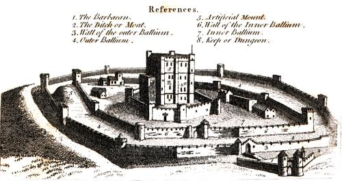

Common text alternative techniques
A link or button containing nothing but an image
When an a element that is a hyperlink, or a button element, has no text content but contains one or more images, include text in the alt attribute(s) that together convey the purpose of the link or button.

<ul> <li><button><img src="b.png" alt="Bold"></button></li> <li><button><img src="i.png" alt="Italics"></button></li> <li><button><img src="strike.png" alt="Strike through"></button></li> <li><button><img src="blist.png" alt="Bulleted list"></button></li> <li><button><img src="nlist.png" alt="Numbered list"></button></li> </ul>
In this example, a link contains a logo. The link points to the W3C web site from an external site. The text alternative is a brief description of the link target.

<a href="http://w3.org"> <img src="images/w3c_home.png" width="72" height="48" alt="W3C web site"> </a>
This example is the same as the previous example, except that the link is on the W3C web site. The text alternative is a brief description of the link target.

<a href="http://w3.org"> <img src="images/w3c_home.png" width="72" height="48" alt="W3C home"> </a>
Depending on the context in which an image of a logo is used it could be appropriate to provide an indication, as part of the text alternative, that the image is a logo. Refer to section on Logos, insignia, flags, or emblems.
In this example, a link contains a print preview icon. The link points to a version of the page with a print stylesheet applied. The text alternative is a brief description of the link target.

<a href="preview.html"> <img src="images/preview.png" width="32" height="30" alt="Print preview."> </a>
In this example, a button contains a search icon. The button submits a search form. The text alternative is a brief description of what the button does.

<button> <img src="images/search.png" width="74" height="29" alt="Search"> </button>
In this example, a company logo for the PIP Corporation has been split into the following two images, the first containing the word PIP and the second with the abbreviated word CO. The images are the sole content of a link to the PIPCO home page. In this case a brief description of the link target is provided. As the images are presented to the user as a single entity the text alternative PIP CO home is in the alt attribute of the first image.


<a href="pipco-home.html"> <img src="pip.gif" alt="PIP CO home"><img src="co.gif" alt=""> </a>
Graphical Representations: Charts, diagrams, graphs, maps, illustrations
Readers can benefit when content is presented in graphical form, for example as a flowchart, a diagram, a graph, or a map showing directions. People unable to see the image for any reason will need the information provided in another form.
Diagrams often convey a lot of information. This means that
a textual alternative may be quite lengthy. The content of the
alt attribute is in general limited to the amount
of text that will fit in the space normally occupied by
the image. In addition, it may be tedious for someone
listening to an audio rendition of a Web page to have to skip
over a lengthy description each time they reach the diagram.
An appropriate technique, then, is to have a short description
in the alt attribute, such as
bar chart of product sales by region, and
to link to a longer image description.
An image description in this context is text, whether embedded in the main document or elsewhere, that would enable a reader to have a good idea of what the image looks like. This is different from an alternate representation in that, for example, it might mention that a pie chart is circular or that the items in a bar chart are horizontal rows, and should mention any significant colors. Such a description can enable people to participate in conversations about the image, or to answer examination questions that might rely on the way the information is represented and not just the underlying data.
Using the alt attribute with an external image description
An external image description is just another document, normally in HTML, that describes an image. You should consider using an external image description if one of more of the following applies:
- The description would not interest people able to see the image itself;
- The description might be lengthy enough to annoy people who can see the image, or confuse people reading the page;
- The description is provided by a third party, for example for diagrams in examination questions.
Using the alt attribute with an associated text alternative
A text alternative presents the same essential information as a diagram or illustration but in a text format accessible in cases where the image is not seen or used. It is normally contained in the same document as the image. You should supply a text alternative in addition to the alt attribute in these circumstances:
- The information takes more than a few words to describe but is still of use to someone who can see the image.
- A user might reasonably want to select the text alternative, or to find it with a browser search function, regardless of whether the image is displayed.
- The text alternative requires structured markup such as MathML, tables, emphasis, multiple paragraphs, links, or Japanese ruby annotations. Attributes such as alt cannot contain elements.
- The text alternative is not in the same language as the main document. Attributes such as alt cannot be marked with xml:lang for language.
The following example is a diagram of a castle. The diagram is taken from a book of historical significance, and hence is a raster image rather than being represented in a vector graphic format such as SVG. As with many diagrams, there are two main parts to this example. The first is a picture, in this case a drawing of a castle. The second part is a set of labels, identifying some of the components of the castle so that they may more easily be described in the text. In this case the labels are numbers on the diagram itself, with a separate table giving a name corresponding to each number.

<img src="castle-diagram.jpg" alt="castle diagram" longdesc="castle-diagram-d.html>
It is not appropriate to try to put descriptions of complex diagrams into alt images, so a short mnemonic label is used; the longer description is in a separate file. It might include text such as the following:
Image description for castle diagram:
The image is taken from an eighteenth-Century engraving in which the various parts of a castle are identified by numbers. Text in the engraving gives a name for each numbered part of the castle.
The castle consists of a square central tower some four or five storeys high, with square turrets at each corner and in the middle of the wall visible in the picture. There is also a flagpole on top of this building, and there are battlements (castellation) around the top of the roof. The entire castle is drawn as if seen from a building slightly taller than this central tower and some distance away, although this is obviously a fictional vantage point. The castle itself is also probably fictional, not representing any specific location.
Surrounding the square tower are three concentric stone walls, also with castellations or arrow-slits at the top of the walls. There are out-buildings in the space between the two smallest rings of wall and a complex gate with turrets on the outermost ring.
The parts are labeled as follows:
- 1. The Barbacan.
This is a gate with two turrets set entirely outside the main walls; it defends the bridge over moat leading to the outermost wall.
- 2. The Ditch or Moat.
The ditch runs all the way round the outer stone wall.
- 3. Wall of the outer Ballium.
This is the outermost wall. It appears to be a little over two meters (six feet) high and consists of straight segments perhaps twenty feet long joined at angles to make a large rough circle shape. There are towers at most of the corners, some square and some circular. The towers are of varying heights, perhaps between ten and twenty feet, with arrow-slits in the walls around the roof of each tower.
The number 3 is engraved on the diagram just behind the barbican gate (number 1), where an arched entrance in the wall is protected by a circular turret rising up from that same wall, and connects the area inside the outer Ballium with a bridge over the moat leading to the inside of the main entrance, the Barbican.
The actual image description continues in the same manner until all of the parts of the castle picture are described. Depending on the context in which the illustration is used the description could also mention that the diagram is printed with dark brown ink on a yellowish-white paper, and even that the edges of the printing-block have left visible lines to the left and top of the picture.
Information that is likely also to be of use (or interest) to people who are able to see the image should normally be in the main document; an example might be the names of the artist and engraver; for a photograph, technical information about the camera lens and exposure would similarly not be suitable for an external image description, because it is not provided as a substitute for the image but to give additional information. Information that is likely to be irrelevant or tedious for people who can see the image but that would be necessary for understanding concepts illustrated should be in the external image description.
Using the alt attribute with an associated text alternative
You should supply a text alternative in addition to the alt attribute in these circumstances:
- The text alternative is more than a few words long, or is complex or detailed.
- A user might reasonably want to select the text alternative, or to find it with a browser search function.
- The text alternative requires structured markup such as MathML, emphasis, multiple paragraphs, links, or Japanese ruby annotations. Attributes such as alt cannot contain elements.
- The text alternative might need to be translated into other languages, or is not in the same language as the main document. Attributes such as alt cannot be marked with xml:lang for language.
Although the alt attribute is essential to enable someone to understand which image was not rendered, it should not be relied on to convey detailed content.
Here's an example of a flowchart image, with a short text alternative included in the alt attribute, in this case the text alternative is a description of the link target as the image is the sole content of a link. The link points to a description, within the same document, of the process represented in the flowchart.

<a href="#desc"><img src="flowchart.gif" alt="Flowchart: Dealing with a broken lamp."></a> ... ... <div id="desc"> <h2>Dealing with a broken lamp</h2> <ol> <li>Check if it's plugged in, if not, plug it in.</li> <li>If it still doesn't work; check if the bulb is burned out. If it is, replace the bulb.</li> <li>If it still doesn't work; buy a new lamp.</li> </ol> </div>
In this example, there is an image of a chart. It would be inappropriate to provide the information depicted in the chart as a plain text alternative in an alt attribute as the information is a data set. Instead a structured text alternative is provided below the image in the form of a data table using the data that is represented in the chart image.

Indications of the highest and lowest rainfall for each season have been included in the table, so trends easily identified in the chart are also available in the data table.
| United Kingdom | Japan | Australia | |
|---|---|---|---|
| Spring | 5.3 (highest) | 2.4 | 2 (lowest) |
| Summer | 4.5 (highest) | 3.4 | 2 (lowest) |
| Autumn | 3.5 (highest) | 1.8 | 1.5 (lowest) |
| Winter | 1.5 (highest) | 1.2 | 1 (lowest) |
<figure role="group" aria-labelledby="caption"> <img src="rainchart.gif" alt="Bar chart: Average rainfall in millimeters by Country and Season."> <table> <caption id="caption">Rainfall in millimeters by Country and Season.</caption> <tr><td><th scope="col">UK <th scope="col">Japan<th scope="col">Australia</tr> <tr><th scope="row">Spring <td>5.5 (highest)<td>2.4 <td>2 (lowest)</tr> <tr><th scope="row">Summer <td>4.5 (highest)<td>3.4<td>2 (lowest)</tr> <tr><th scope="row">Autumn <td>3.5 (highest) <td>1.8 <td>1.5 (lowest)</tr> <tr><th scope="row">Winter <td>1.5 (highest) <td>1.2 <td>1 lowest</tr> </table> </figure>
The table image and data table are grouped using a figure element
with an [[!WAI-ARIA]] role="group". The
figure is labelled by the table caption content using aria-labelledby.
Once figure and figcaption are accessibility supported in browsers, the addition of ARIA attributes will not be required.
For any of the examples in this section the details and summary
elements could be used so that the text descriptions for the images are only displayed on demand:
Default (closed) view:

Expanded view (after control activated):

<figure> <img src="flowchart.gif" alt="Flowchart: Dealing with a broken lamp."> <details> <summary>Dealing with a broken lamp</summary> <ol> <li>Check if it's plugged in, if not, plug it in.</li> <li>If it still doesn't work; check if the bulb is burned out. If it is, replace the bulb.</li> <li>If it still doesn't work; buy a new lamp.</li> </ol> </details> </figure>
The details and summary elements are not well supported by browsers, until such times they are supported, if used, you will need to use scripting to provide the functionality. There are a number of scripted polyfills available and also scripted custom controls are available, in popular JavaScript UI widget libraries, which provide similar functionality.
Images of text
Sometimes, an image only contains text, and the purpose of the image is to display text using visual effects and /or fonts. It is strongly recommended that text styled using CSS be used, but if this is not possible, provide the same text in the alt attribute as is in the image.
This example shows an image of the text "Get Happy!" written in a fancy multi colored freehand style. The image makes up the content of a heading. In this case the text alternative for the image is "Get Happy!".

<h1><img src="gethappy.gif" alt="Get Happy!"></h1>
In this example we have an advertising image consisting of text, the phrase "The BIG sale" is repeated 3 times, each time the text gets smaller and fainter, the last line reads "...ends Friday" In the context of use, as an advertisement, it is recommended that the image's text alternative only include the text "The BIG sale" once as the repetition is for visual effect and the repetition of the text for users who cannot view the image is unnecessary and could be confusing.

<p><img src="sale.gif" alt="The BIG sale ...ends Friday."></p>
In situations where there is also a photo or other graphic along with the image of text, ensure that the words in the image text are included in the text alternative, along with any other description of the image that conveys meaning to users who can view the image, so the information is also available to users who cannot view the image.
When an image is used to represent a character that cannot otherwise be represented in Unicode, for example gaiji, itaiji, or new characters such as novel currency symbols, the text alternative should be a more conventional way of writing the same thing, e.g. using the phonetic hiragana or katakana to give the character's pronunciation.
In this example from 1997, a new-fangled currency symbol that looks like a curly E with two bars in the middle instead of one is represented using an image. The alternative text gives the character's pronunciation.
Only  5.99!
5.99!
<p>Only <img src="euro.png" alt="euro ">5.99!
An image should not be used if Unicode characters would serve an identical purpose. Only when the text cannot be directly represented using Unicode, e.g. because of decorations or because the character is not in the Unicode character set (as in the case of gaiji), would an image be appropriate.
If an author is tempted to use an image because their default system font does not support a given character, then Web Fonts are a better solution than images.
An illuminated manuscript might use graphics for some of its letters. The text alternative in such a situation is just the character that the image represents.
 nce upon a time and a long long time ago...
nce upon a time and a long long time ago...
<p><img src="initials/fancyO.png" alt="O">nce upon a time and a long long time ago...
Images that include text
Sometimes, an image consists of a graphics such as a chart and associated text. In this case it is recommended that the text in the image is included in the text alternative.
Consider an image containing a pie chart and associated text. It is recommended wherever possible to provide any associated text as text, not an image of text. If this is not possible include the text in the text alternative along with the pertinent information conveyed in the image.

<p><img src="figure1.gif" alt="Figure 1. Distribution of Articles by Journal Category. Pie chart: Language=68%, Education=14%, and Science=18%."></p>
Here's another example of the same pie chart image, showing a short text alternative included in the alt attribute and a longer text alternative in text. The figure and figcaption elements are used to associate the longer text alternative with the image. The alt attribute is used to label the image.
<figure> <img src="figure1.gif" alt="Figure 1"> <figcaption><strong>Figure 1.</strong> Distribution of Articles by Journal Category. Pie chart: Language=68%, Education=14%, and Science=18%.</figcaption> </figure>
The advantage of this method over the previous example is that the text alternative is available to all users at all times. It also allows structured mark up to be used in the text alternative, where as a text alternative provided using the alt attribute does not.
Images that enhance the themes or subject matter of the page content
An image that isn't discussed directly by the surrounding text but still has some relevance can be included in a page using the img element. Such images are more than mere decoration, they may augment the themes or subject matter of the page content and so still form part of the content. In these cases, it is recommended that a text alternative be provided.
Here is an example of an image closely related to the subject matter of the page content but not directly discussed. It is an image of a painting inspired by a poem, on a page reciting that poem. The following snippet shows an example. The image is a painting titled the "Lady of Shallot", it is inspired by the poem and its subject matter is derived from the poem. Therefore it is strongly recommended that a text alternative is provided. There is a short description of the content of the image in the alt attribute and a link below the image to a longer description located at the bottom of the document. At the end of the longer description there is also a link to further information about the painting.

<header> <h1>The Lady of Shalott</h1> <p>A poem by Alfred Lord Tennyson</p> </header> <img src="shalott.jpeg" alt="Painting of a young woman with long hair, sitting in a wooden boat. "> <p><a href="#des">Description of the painting</a>.</p> <!-- Full Recitation of Alfred, Lord Tennyson's Poem. --> ... ... ... <p id="des">The woman in the painting is wearing a flowing white dress. A large piece of intricately patterned fabric is draped over the side. In her right hand she holds the chain mooring the boat. Her expression is mournful. She stares at a crucifix lying in front of her. Beside it are three candles. Two have blown out. <a href="http://bit.ly/5HJvVZ">Further information about the painting</a>.</p>
This example illustrates the provision of a text alternative identifying an image as a photo of the main subject of a page.

<img src="orateur_robin_berjon.png" alt="Portrait photo(black and white) of Robin."> <h1>Robin Berjon</h1> <p>What more needs to be said?</p>
A graphical representation of some of the surrounding text
In many cases, the image is actually just supplementary, and its presence merely reinforces the surrounding text. In these cases, the alt attribute must be present but its value must be the empty string.
In general, an image falls into this category if removing the image doesn't make the page any less useful, but including the image makes it a lot easier for users of visual browsers to understand the concept.
It is not always easy to write a useful text alternative for an image, another option is to provide a link to a description or further information about the image when one is available.
In this example of the same image, there is a short text alternative included in the alt attribute, and there is a link after the image. The link points to a page containing information about the painting.
The Lady of Shalott
A poem by Alfred Lord Tennyson.
Full recitation of Alfred, Lord Tennyson's poem.
<header> <h1>The Lady of Shalott</h1> <p>A poem by Alfred Lord Tennyson</p> </header> <figure> <img src="shalott.jpeg" alt="Painting of a woman in a white flowing dress, sitting in a small boat."> <p><a href="http://bit.ly/5HJvVZ">About this painting.</a></p> </figure> <!-- Full Recitation of Alfred, Lord Tennyson's Poem. -->
A purely decorative image that doesn't add any information
Purely decorative images are visual enhancements, decorations, or embellishments that provide no function or information beyond aesthetics to users who can view the images.
Mark up purely decorative images so they can be ignored by assistive technology by using an empty alt attribute (alt="").
Here's an example of an image being used as a decorative banner for a person's blog. The image offers no information and so an empty alt attribute is used.

Clara's Blog
Welcome to my blog...
<header> <div><img src="border.gif" alt="" width="400" height="30"></div> <h1>Clara's Blog</h1> </header> <p>Welcome to my blog...</p>
Inline images
When images are used inline as part of the flow of text in a sentence, provide a word or phrase as a text alternative which makes sense in the context of the sentence it is a part of.
I  you.
you.
I <img src="heart.png" alt="love"> you.
My  breaks.
breaks.
My <img src="heart.png" alt="heart"> breaks.
Unicode characters could be used as an alternative to inline images where appropriate. Modern browsers have support for characters like "♥" and "☺", and support the use of custom fonts to render those as colored image fonts, or an author can use image replacement techniques.
A group of images that form a single larger picture with no links
When a picture has been sliced into smaller image files that are then displayed together to form the complete picture again, include a text alternative for one of the images using the alt attribute as per the relevant
guidance for the picture as a whole, and then include an empty alt attribute on the other images.
In this example, a picture representing a company logo for the PIP Corporation has been split into two pieces, the first containing the letters "PIP" and the second with the word "CO". The text alternative PIP CO is in the alt attribute of the first image.
<img src="pip.gif" alt="PIP CO"><img src="co.gif" alt="">
In the following example, a rating is shown as three filled stars and two empty stars. While the text alternative could have been "★★★☆☆", the author has instead decided to more helpfully give the rating in the form "3 out of 5". That is the text alternative of the first image, and the rest have empty alt attributes.

<p>Rating: <meter max=5 value=3> <img src="1" alt="3 out of 5"> <img src="1" alt=""> <img src="1" alt=""> <img src="0" alt=""> <img src="0" alt=""> </meter></p>
Image maps
If an img element has a usemap attribute which references a map element containing area elements that have href attributes, the img is considered to be interactive content. In such cases, always provide a text alternative for the image using thealt attribute.
Consider the following image which is a map of Katoomba, it has 2 interactive regions corresponding to the areas of North and South Katoomba:

The text alternative is a brief description of the image. The alt attribute on each of the area elements provides text describing the content of the target page of each linked region:
<p>View houses for sale in North Katoomba or South Katoomba:</p> <p><img src="imagemap.png" width="209" alt="Map of Katoomba" height="249" usemap="#Map"> <map name="Map"> <area shape="poly" coords="78,124,124,10,189,29,173,93,168,132,136,151,110,130" href="north.html" alt="Houses in North Katoomba"> <area shape="poly" coords="66,63,80,135,106,138,137,154,167,137,175,133,144,240,49,223,17,137,17,61" alt="Houses in South Katoomba" href="south.html"> </map>
Generally, slicing an image for links should be used instead of image maps as fallback support for image maps is poorly supported.
A group of images that form a single larger picture with links
Sometimes, when you create a composite picture from multiple images, you may wish to link one or more of the images. Provide an alt attribute for each linked image to describe the purpose of the link.
In the following example, a composite picture is used to represent a "crocoduck"; a fictional creature which defies evolutionary principles by being part crocodile and part duck. You are asked to interact with the crocoduck, but you need to exercise caution...


<h1>The crocoduck</h1> <p>You encounter a strange creature called a "crocoduck". The creature seems angry! Perhaps some friendly stroking will help to calm it, but be careful not to stroke any crocodile parts. This would just enrage the beast further.</p> <a href="?stroke=head"><img src="crocoduck1.png" alt="Stroke crocodile's angry, chomping head"></a> <a href="?stroke=body"><img src="crocoduck2.png" alt="Stroke duck's soft, feathery body"></a>
Images of Pictures
Images of pictures or graphics include visual representations of objects, people, scenes, abstractions, etc. This non-text content can convey a significant amount of information visually or provide a specific sensory experience [[!WCAG20]] to a sighted person. Examples include photographs, paintings, drawings and artwork.
An appropriate text alternative for a picture is a brief description, or name [[!WCAG20]]. As in all text alternative authoring decisions, writing suitable text alternatives for pictures requires human judgment. The text value is subjective to the context where the image is used and the page author's writing style. Therefore, there is no single 'right' or 'correct' piece of alt text for any particular image. In addition to providing a short text alternative that gives a brief description of the non-text content, also providing supplemental content through another means when appropriate may be useful.
This first example shows an image uploaded to a photo-sharing site. The photo is of a cat, sitting in the bath. The image has a text alternative provided using the img element's alt attribute. It also has a caption provided by including the img element in a figure element and using a figcaption element to identify the caption text.

Lola prefers a bath to a shower.
<figure> <img src="664aef.jpg" alt="Lola the cat sitting under an umbrella in the bath tub."> <figcaption>Lola prefers a bath to a shower.</figcaption> </figure>
This example is of an image that defies a complete description, as the subject of the image is open to interpretation. The image has a text alternative in the alt attribute which gives users who cannot view the image a sense of what the image is. It also has a caption provided by including the img element in a figure element and using a figcaption element to identify the caption text.

The first of the ten cards in the Rorschach test.
<figure> <img src="Rorschach1.jpg" alt="An abstract, freeform, vertically symmetrical, black inkblot on a light background."> <figcaption>The first of the ten cards in the Rorschach test.</figcaption> </figure>
Webcam images
Webcam images are static images that are automatically updated periodically. Typically the images are from a fixed viewpoint, the images may update on the page automatically as each new image is uploaded from the camera or the user may be required to refresh the page to view an updated image. Examples include traffic and weather cameras.
This example is fairly typical; the title and a time stamp are included in the image, automatically generated by the webcam software. It would be better if the text information was not included in the image, but as it is part of the image, include it as part of the text alternative. A caption is also provided using the figure and figcaption elements. As the image is provided to give a visual indication of the current weather near a building, a link to a local weather forecast is provided, as with automatically generated and uploaded webcam images it may be impractical to provide such information as a text alternative.
The text of the alt attribute includes a prose version of the timestamp, designed to make the text more understandable when announced by text to speech software. The text alternative also includes a description of some aspects of what can be seen in the image which are unchanging, although weather conditions and time of day change.

View from the top of Sopwith house, looking towards North Kingston. This image is updated every hour.
View the latest weather details for Kingston upon Thames.
<figure> <img src="webcam1.jpg" alt="Sopwith house weather cam. Taken on the 21/04/10 at 11:51 and 34 seconds. In the foreground are the safety rails on the flat part of the roof. Nearby there are low rise industrial buildings, beyond are blocks of flats. In the distance there's a church steeple."> <figcaption>View from Sopwith house, looking towards north Kingston. This image is updated every hour.</figcaption> </figure> <p>View the <a href="http://news.bbc.co.uk/weather/forecast/4296?area=Kingston">latest weather details</a> for Kingston upon Thames.</p>
When a text alternative is not available at the time of publication
In some cases an image is included in a published document, but the author is unable to provide an appropriate text alternative. In such cases the minimum requirement is to provide a caption for the image using the figure and figcaption elements under the following conditions:
- The img element is in a figure element
- The figure element contains a figcaption element
- The figcaption element contains content other than inter-element whitespace
- Ignoring the figcaption element and its descendants, the figure element has no Text node descendants other than inter-element whitespace, and no embedded content descendant other than the img element.
In other words, the only content of the figure is an img element and a figcaption element, and the figcaption element must include (caption) content.
Such cases are to be kept to an absolute minimum. If there is even the slightest possibility of the author having the ability to provide real alternative text, then it would not be acceptable to omit the alt attribute.
In this example, a person uploads a photo, as part of a bulk upload of many images, to a photo sharing site. The user has not provided a text alternative or a caption for the image. The site's authoring tool inserts a caption automatically using whatever useful information it has for the image. In this case it's the file name and date the photo was taken.
The caption text in the example below is not a suitable text alternative and is not conforming to the Web Accessibility Guidelines 2.0. [[!WCAG20]]

clara.jpg, taken on 12/11/2010.
<figure> <img src="clara.jpg"> <figcaption>clara.jpg, taken on 12/11/2010.</figcaption> </figure>
Notice that even in this example, as much useful information as possible is still included in the figcaption element.
In this second example, a person uploads a photo to a photo sharing site. She has provided a caption for the image but not a text alternative. This may be because the site does not provide users with the ability to add a text alternative in the alt attribute.

Eloisa with Princess Belle
<figure> <img src="elo.jpg"> <figcaption>Eloisa with Princess Belle</figcaption> </figure>
Sometimes the entire point of the image is that a textual description is not available, and the user is to provide the description. For example, software that displays images and asks for alternative text precisely for the purpose of then writing a page with correct alternative text. Such a page could have a table of images, like this:
<table> <tr><tr> <th> Image <th> Description <tr> <td> <figure> <img src="2421.png"> <figcaption>Image 640 by 100, filename 'banner.gif'</figcaption> </figure> <td> <input name="alt2421"> <tr> <td> <figure> <img src="2422.png"> <figcaption>Image 200 by 480, filename 'ad3.gif'</figcaption> </figure> <td> <input name="alt2422"> </table>
Since some users cannot use images at all (e.g. because they are blind) the alt attribute is only allowed to be omitted when no text alternative is available and none can be made available, as in the above examples.
An image not intended for the user
Generally authors should avoid using img elements for purposes other than showing images.
If an img element is being used for purposes other than showing an image, e.g. as part of a service to count page views, use an empty alt attribute.
An example of an img element used to collect web page statistics. The alt attribute is empty as the image has no meaning.
<img src="http://server3.stats.com/count.pl?NeonMeatDream.com" width="0" height="0" alt="">
It is recommended for the example use above the width and height attributes be set to zero.
Another example use is when an image such as a spacer.gif is used to aid positioning of content. The alt attribute is empty as the image has no meaning.
<img src="spacer.gif" width="10" height="10" alt="">
It is recommended that that CSS be used to position content instead of img elements.
Icon Images
An icon is usually a simple picture representing a program, action, data file or a concept. Icons are intended to help users of visual browsers to recognize features at a glance.
Use an empty alt attribute when an icon is supplemental to text conveying the same meaning.
In this example, we have a link pointing to a site's home page, the link contains a house icon image and the text "home". The image has an empty alt text. Where images are used in this way, it would also be appropriate to add the image using CSS

<a href="home.html"><img src="home.gif" width="15" height="15" alt="">Home</a>
#home:before { content: url(home.png);}
<a href="home.html" id="home">Home</a>
In this example, there is a warning message, with a warning icon. The word "Warning!" is in emphasized text next to the icon. As the information conveyed by the icon is redundant the img element is given in an empty alt attribute.
 Warning! Your session is about to expire.
Warning! Your session is about to expire.
<p><img src="warning.png" width="15" height="15" alt=""> <strong>Warning!</strong> Your session is about to expire</p>
When an icon conveys additional information not available in text, provide a text alternative.
In this example, there is a warning message, with a warning icon. The icon emphasizes the importance of the message and identifies it as a particular type of content.
 Your session is about to expire.
Your session is about to expire.
<p><img src="warning.png" width="15" height="15" alt="Warning!"> Your session is about to expire</p>
Logos, insignia, flags, or emblems
Many pages include logos, insignia, flags, or emblems, which stand for a company, organization, project, band, software package, country, or other entity. What can be considered as an appropriate text alternative depends upon, like all images, the context in which the image is being used and what function it serves in the given context.
If a logo is the sole content of a link, provide a brief description of the link target in the alt attribute.
This example illustrates the use of the HTML5 logo as the sole content of a link to the HTML specification.

<a href="http://dev.w3.org/html5/spec/spec.html"><img src="HTML5_Logo.png" alt="HTML 5.1 specification"></a>
If a logo is being used to represent the entity, e.g. as a page heading, provide the name of the entity being represented by the logo as the text alternative.
This example illustrates the use of the WebPlatform.org logo being used to represent itself.
 and other developer resources
and other developer resources
<h2><img src="images/webplatform.png" alt="WebPlatform.org"> and other developer resources<h2>
The text alternative in the example above could also include the word "logo" to describe the type of image content. If so, it is suggested that square brackets be used to delineate this information: alt="[logo] WebPlatform.org".
If a logo is being used next to the name of the entity it represents, then the logo is supplemental. Include an empty alt attribute as the text alternative is already provided.
This example illustrates the use of a logo next to the name of the organization it represents.
 WebPlatform.org
WebPlatform.org
<img src="images/webplatform1.png" alt=""> WebPlatform.org
If the logo is used alongside text discussing the subject or entity the logo represents, then provide a text alternative which describes the logo.
This example illustrates the use of a logo next to text discussing the subject the logo represents.

HTML5 is a language for structuring and presenting content for the World Wide Web, a core technology of the Internet. It is the latest revision of the HTML standard (originally created in 1990 and most recently standardized as HTML4 in 1997) and currently remains under development. Its core aims have been to improve the language with support for the latest multimedia while keeping it easily readable by humans and consistently understood by computers and devices (web browsers, parsers etc.).
<p><img src="HTML5_Logo.png" alt="HTML5 logo: Shaped like a shield with the text 'HTML' above and the numeral '5' prominent on the face of the shield."></p> Information about HTML5
CAPTCHA Images
CAPTCHA stands for "Completely Automated Public Turing test to tell Computers and Humans Apart". CAPTCHA images are used for security purposes to confirm that content is being accessed by a person rather than a computer. This authentication is done through visual verification of an image. CAPTCHA typically presents an image with characters or words in it that the user is to re-type. The image is usually distorted and has some noise applied to it to make the characters difficult to read.
To improve the accessibility of CAPTCHA provide text alternatives that identify and describe the purpose of the image, and provide alternative forms of the CAPTCHA using output modes for different types of sensory perception. For instance provide an audio alternative along with the visual image. Place the audio option right next to the visual one. This helps but is still problematic for people without sound cards, the deaf-blind, and some people with limited hearing. Another method is to include a form that asks a question along with the visual image. This helps but can be problematic for people with cognitive impairments.
It is strongly recommended that alternatives to CAPTCHA be used, as all forms of CAPTCHA introduce unacceptable barriers to entry for users with disabilities. For further information, see [[TURINGTEST]].
This example shows a CAPTCHA test which uses a distorted image of text. The text alternative in the alt attribute provides instructions for a user in the case where she cannot access the image content.

<img src="captcha.png" alt="If you cannot view this image an audio challenge is provided."> <!-- audio CAPTCHA option that allows the user to listen and type the word --> <!-- form that asks a question -->